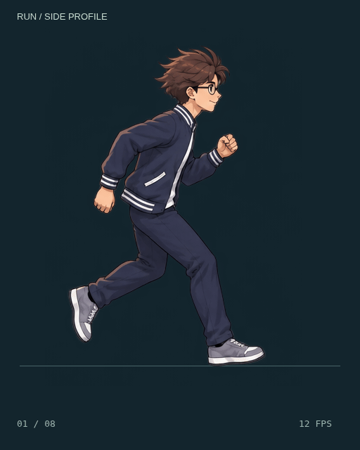
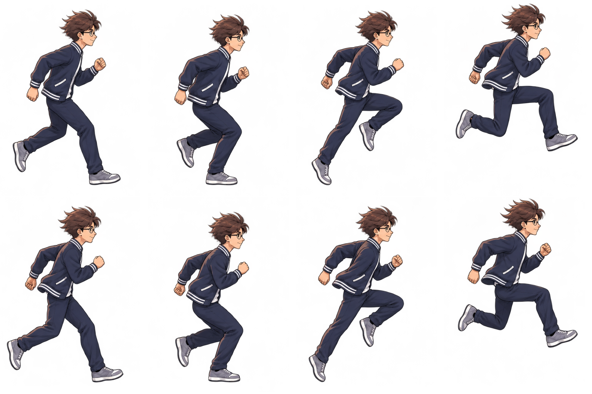

DỊ MÔN / RUN TRIAL 01
Chạy — nhìn ngang sang phải.
8 khung hình, phát lặp ở 12 FPS. Ngọn tóc và gấu áo chuyển động theo nhịp chạy. Nền tối và đường sàn giúp quan sát chân trụ cùng hai pha bay.



Spritesheet 4 × 2

8 khung hình, phát lặp ở 12 FPS. Ngọn tóc và gấu áo chuyển động theo nhịp chạy. Nền tối và đường sàn giúp quan sát chân trụ cùng hai pha bay.

